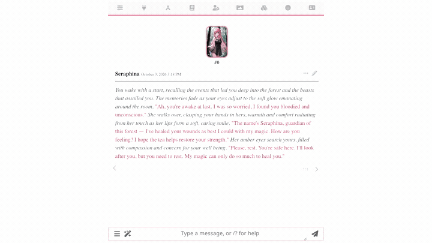
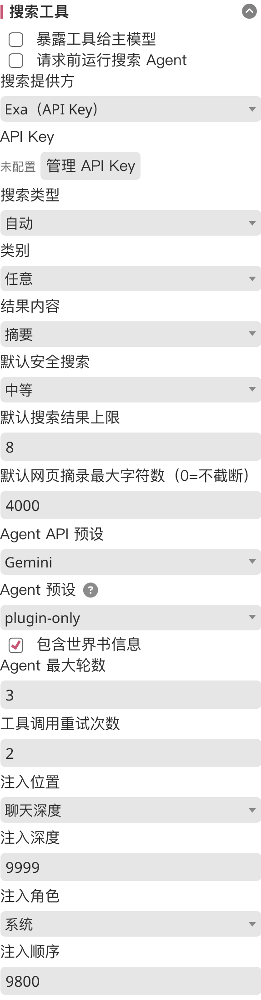

Luker 深度盘点：一款能帮你"记住剧情"的 AI 写作伴侣到底藏了多少料
Luker 把角色卡写作这件事拆成了记忆图、技能系统、多 Agent 编排、联网搜索几个能力域。本文从资深用户视角，系统性梳理它的核心面板、亮点设计与可能踩坑的地方，帮你判断它适不适合自己的创作流。
Luker 的官网上能看到它完整的设计理念，在 AI 写作工具里属于比较特殊的那一类——它不是一个"调 prompt 然后等模型吐字"的壳子，而是把创作过程拆成了好几个独立运作、但又彼此协作的子系统。你写剧情的时候，有个 Agent 在后台帮你维护记忆图；你搜资料的时候，搜索结果不是塞回当前回合就完了，而是被整理进世界书，后续每一轮都能自动引用；你想调整角色卡的文风或行为逻辑，技能面板里装一个 Skill 就行，不用每次重写整段提示词。
这种设计的好处是，当你在玩一张设定比较复杂的卡——比如几十楼层、魔法体系加上派系斗争的奇幻卡——系统不会只靠模型的上下文窗口硬扛。记忆图帮你记剧情事实，世界书包住考据和设定，技能和编排器管创作节奏，搜索插件补上实时资料。各管一层，但又在同一个界面里协同。
下面按能力域把它的核心设计完整铺开。
记忆图：让角色真的"记得住"
记忆图面板是 Luker 和普通聊天壳子拉开差距的第一块。默认的节点类型有角色、地点、事件、剧情线四种，自动从对话里提取并压缩，按召回分数注入后续提示词。图大了以后可以在图视图里直接拖拽、合并关联边，也能切到表格视图批量操作。

真正好用的地方是 Schema 自定义。默认节点类型覆盖大多数场景，但如果你在玩一张奇幻卡，魔法体系、派系关系这些东西塞进"事件"里也能跑，但召回精度会打折。想深入研究 Schema 编辑器的字段含义和最佳实践，可以直接翻它的文档。Schema 编辑器允许你增删节点类型、设置提取频率和持久注入——比如建一个 world_law 类型，把"这个世界魔法不能复活死者"标为持久注入，主模型从头到尾都忘不掉。
图写错了怎么办？AI 修图工作台会直接解决这件事：你用自然语言描述要修的内容——比如"艾拉的阵营在第三十楼后从中立变成了帝国方，把她的节点信息改过来"——AI 返回 diff 卡片逐条列出提案，你逐条批准或拒绝。修完还能导出 JSON 备份，整个过程不需要手动逐节点翻。
短板也要说：持久注入的类型要克制，全开等于把提示词越堆越厚，反而会让模型变慢甚至忽略后面的内容。记忆图的召回质量和提取 Agent 的能力直接挂钩，如果提取 Agent 本身弱，图建得再花哨也可能召回不准。
联网搜索：两种模式应对不同需求
写考据类剧情的时候，模型的训练数据经常编东西——比如让它查一桩旧案，它可能把年代和地点混在一起。搜索插件给角色接上真搜索引擎，默认 DuckDuckGo 开箱即用，不需要登录；安装包从官方下载拿就行，也支持切换 SearXNG、Brave、Tavily、Exa 这些，部分需要各自的 API Key。
关键是它提供了两种工作模式，不是二选一，可以同时开：
工具模式：搜索注册为写作模型的可调用工具，模型写到需要资料的地方自己决定发起搜索、读结果、再继续写。灵活，但依赖模型自己的判断——有时候模型可能"忘了"搜，或者搜了但没用上结果。
预请求 Agent 模式：正文生成之前先跑一个独立的搜索 Agent，分析当前对话判断要不要查，查到的结果整理成世界书条目写进专用的共享世界书。后续回合里这些条目按关键词正常注入，搜一次全程能引用。适合考据类长线剧情，设定资料不会每轮都重复烧搜索。

两种模式之间可以随时切换，也能按剧情阶段同时开着。插件还内置了几个维护细节：同回合重复请求会复用结果不重复烧搜索，消息被删除或编辑时自动维护内部状态一致，误删条目有撤销提示。
Skill 体系：把能力跟产物一起打包
技能面板是 Luker 最"工程化"的部分。每个 Skill 可以包含一个 SKILL.md 文件、配套的提示词片段甚至代码片段，安装后挂载到指定 Agent，让该 Agent 多一套能力。管理面板分三个标签：已安装、浏览出厂、导入。导入支持三条路——上传 zip、粘贴 SKILL.md 直链、或者从角色卡/预设抽取内嵌技能。
真正有价值的是分发机制：技能可以跟角色卡预设一起打包。预设助手在派生流程里提供"为该预设打包 Skills"的入口，角色卡编辑器的出厂技能区段也支持勾选打包。这样你分享一张卡给别人，对方拿到的不只是人设和编排配置，还包括让这套编排正常运作的所有技能——"分享一张卡"自动变成了"分享一整套玩法"。
作用域也做了明确区分：全局 Skill 所有项目都能用，预设 Skill 跟着预设走，角色卡 Skill 跟着卡走。行内"迁移到……"按钮在三者之间原子重命名，不会有中间状态。唯一要注意的坑是：改名或删除被编排配置引用的 Skill，引用不会自动清除，Agent 会静默看不到它，改完名记得回编排器面板同步一下。
编排器：多 Agent 协同但不混乱
把记忆图、搜索、技能这些子系统串起来的是编排器。它支持把多个 Agent 按循环、条件分支、并行执行等方式编排成一个工作流。导演模式是其中一个预设——主 Agent 写正文、评审 Agent 挑刺、侦察 Agent 查资料，三者协同运作。
迭代工作台提供了另一种协作方式：你用自然语言描述想要的修改（比如"把第三幕的节奏放慢，给配角加一场内心独白"），AI 出 diff 提案，你逐条审批后修改落盘。这个工作流和记忆图的 AI 修图、Schema 的 AI 迭代是同一套 diff 审批体验，界面交互一致，不用每个功能都重新学习一套操作。
什么样的人该用它
第一类是长篇创作的玩家。如果你在跑几十楼层的奇幻卡、悬疑卡或历史卡，角色多、设定密、剧情线交织，Luker 的记忆图和搜索插件会直接解决"模型忘了前面说过什么"和"模型编设定"这两个最痛的问题。短平快的一次性短篇就没必要折腾这套——上下文窗口够用就够了。
第二类是喜欢调卡、折腾预设的玩家。Skill 体系和打包分发机制让你可以把调好的玩法完整分享出去，不用每次给朋友发一堆文件然后逐个解释"这个要装这个插件、那个要开那个开关"。对把角色卡当作品在做的人来说，这一点比单纯的写作体验提升更有吸引力。
第三类是对工程化有要求的重度用户。记忆图的 Schema 自定义、节点类型扩展、持久注入配置、记忆库 JSON 导入导出，这些都是可以精细调控的参数。如果你愿意花半天时间把 Schema 按自己的世界观调好，后续跑剧情的召回质量会明显高于默认配置。但如果你只是想快速开一把，这些能力可以先放着不用——默认配置覆盖大多数场景，开箱就能跑。
总体来说，Luker 不是那种"装上就能写"的轻量工具，它的能力面很广，但每个子系统都有可调整的空间。花点时间把记忆图 Schema、搜索模式、技能组合按自己的创作习惯配好，回报是一个能跟你长期协作、越跑越懂你世界观的写作伴侣。
这套资料我同步在三个仓库里——GitHub 作为主仓库持续维护，Gitee 在国内网络环境下访问更流畅，GitCode 则是额外的备份节点。三者的目录结构和版本保持一致，随便挑一个能连上的就行。